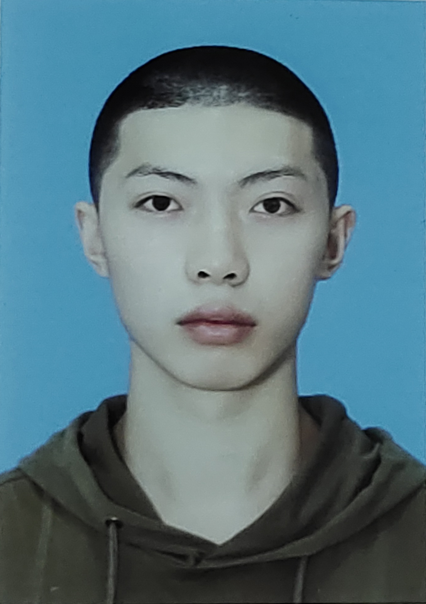
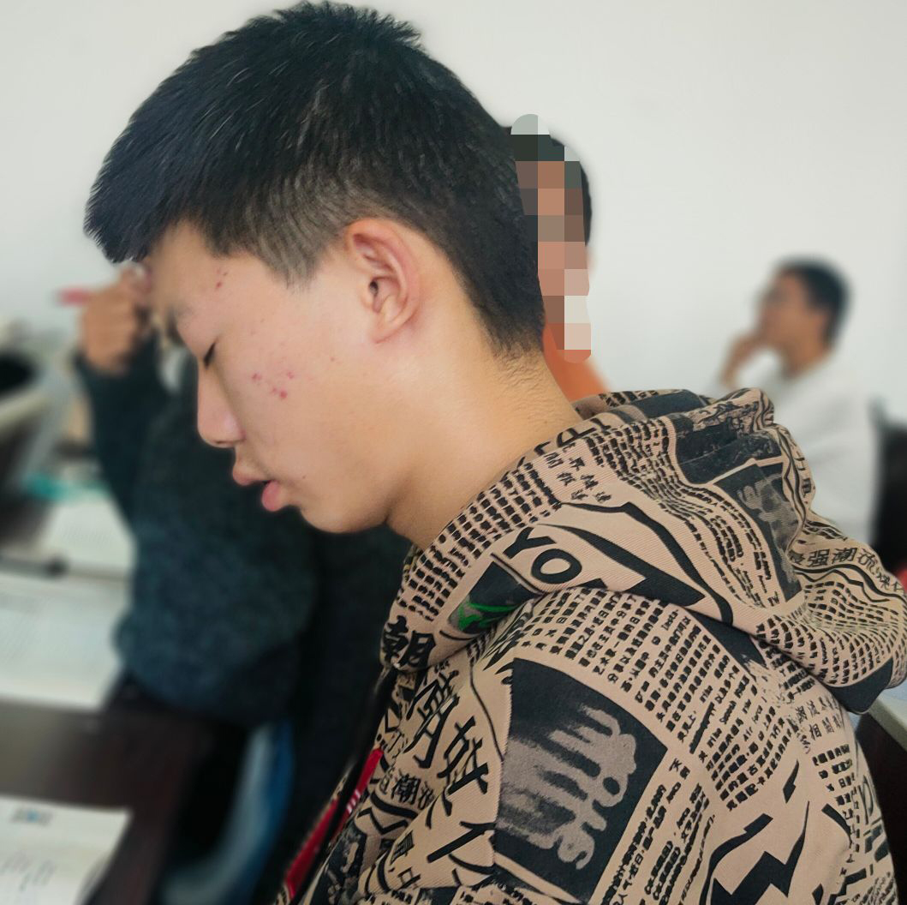
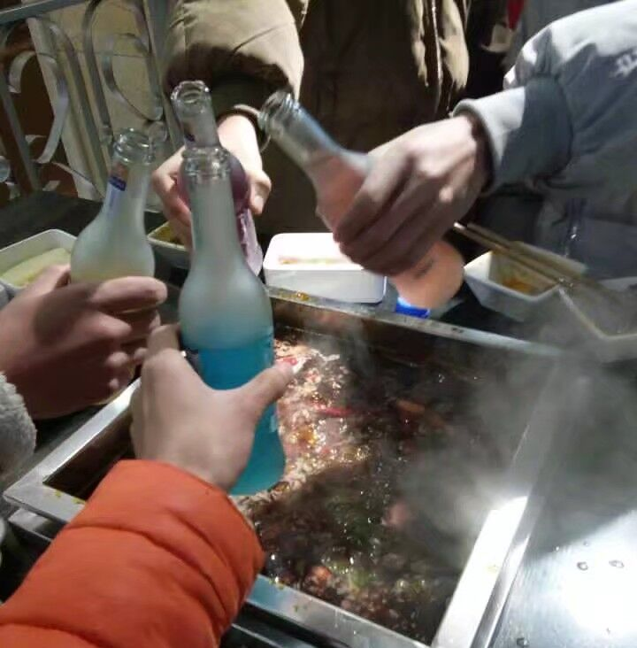
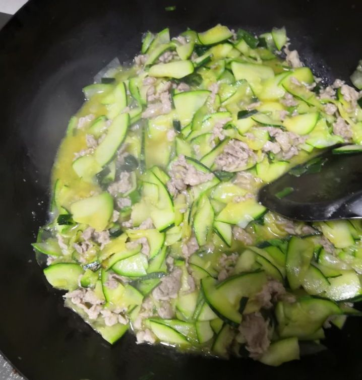
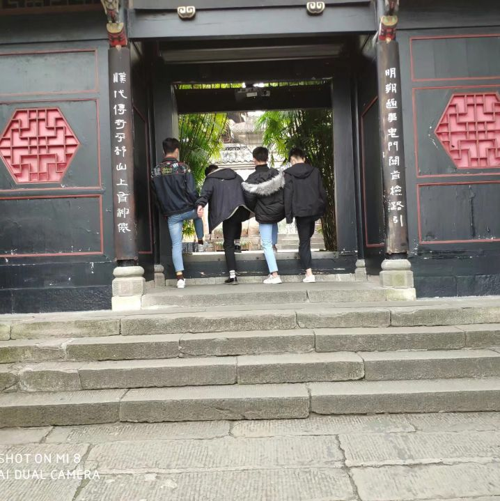
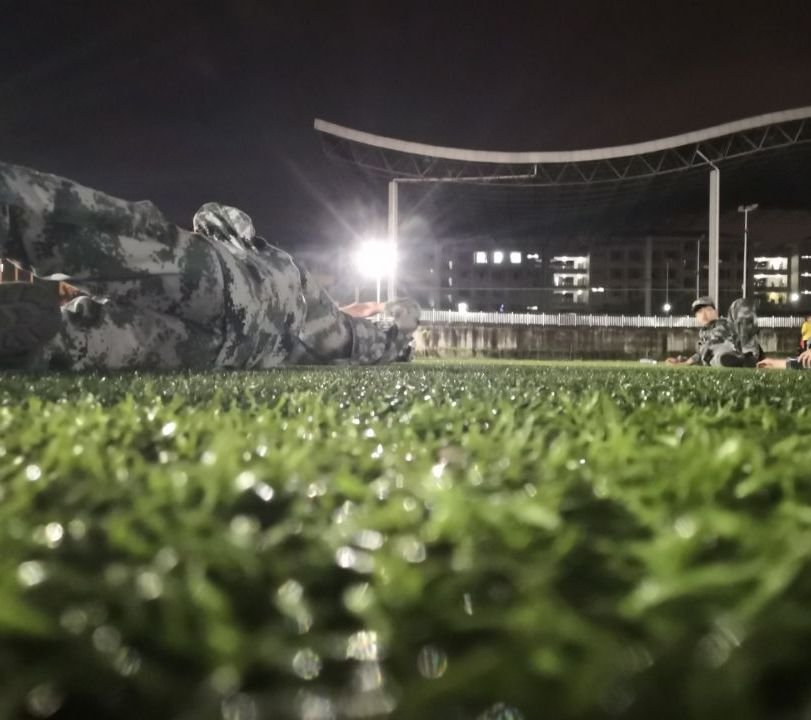

个人介绍
但行好事，莫问前程
但行好事，莫问前程

- 年龄：
- 18
- 籍贯
- 重庆丰都
- 学校：
- 重庆师范大学
- 专业：
- 计算机科学与技术
- 年级：
- 2020级 对口高职
- 工作意向：
- Web前端开发工程师
未来职业规划
自我认知
性格：善于独立思考，注重团队力量，善解人意，刻苦，喜欢钻研；表达能力强，能够准确表达自己的需求。 兴趣：爱好阅读，注重看有所求、看有所得，体育方面兴趣十分广泛，喜欢乒乓球、羽毛球等。 价值观：坚信马克思真理，崇尚社会主义，个人价值由回报社会所决定，坚信美好未来。价值观决定以后生活活动，决定自己个人、社会价值的产生。将最高价值目标化，做好诸如效益观念，风险观念，竞争观念，平等观念，以及敢破常规、积极进取、精益求精、勇于创造等的培养、发展。 能力：具备敏锐的观察力，遇到事情有自己独到的看法，自制力不错，善于吸收借鉴别人的长处，同时不忘自己的创新。虽然有时候做事也会草率鲁莽，但多数时候是冷静，慎重的。机敏、领悟力较好，富直觉能力。未来四年职业规划
第一学年：尽早调整大学学习状态，适应大学生活节奏。认真且系统性学习专业课程，及时复习所学知识，坚持一边学习一边实践的高效学习法， 尽快地完成老师布置的专业作业，一学期保质保量地学完一门专业课程，并利用所学知识按要求地完成大作业。 第二学年：加强专业知识的学习，对以后的工作取向和目标进一步的明确和必要的细化。上学期：确保专业课的优异过关，并利用空闲时间，对专业知识进行提前性学习和实践，进一步提高自学能力。英语过三级，计算机过二级。寒暑假争取找到一份相关自己专业的工作。 第三学年：上学期：了解市场、IT行业的走向和社会需求，通过亲身体验实践发现并完善自己知识的短缺面，非专业课程不挂科。下学期：学业很好的过关。清楚且充分认识自己，十分明确自己的专业方向和职业定位，找好一家实习单位，通过自己过硬的专业素质和优秀的职业素养拿下工作。 第四学年，凭借根据假期和以往实习经验，顺利拿到一家大公司的工作，通过实践进一步提高自己的专业水平，为自己进入更大平台积累经验和实力，进入公司的技术核心层；顺利拿到双证。
我的生活（片段）
将生活的点点滴滴永久保存在回忆里
将生活的点点滴滴永久保存在回忆里
这是有一次早自习，因为前一晚上睡得比较晚，所以早自习就没有撑住，结果万万没想到我唯一一次睡觉居然被无良室友偷拍了。哎，当时看到也是一言难尽。。。

这是和我的沙雕室友们相约出去玩，喜欢出去玩，不仅要努力读书，而且也要让自己的所学能够在生活中体现，学以致用

这是和室友一起出去干饭的时候，对于干饭人来说没有什么事情比干饭更快乐的了。但是对于我来说，敲代码也能够给我带来巨大的快乐。特别是改掉了bug之后

这是我炒的菜，对于一个并不太富有的吃货而言，自己做无疑是是个两全其美的办法。emmm，然后我就成家里的主厨了。。。

这是军训时候在二操场，军训是上大学的第一课，当时摔得贼痛，不说了，摔得挺深刻的

个人介绍（视频）
这将会是你所看到的最真实的我
这将会是你所看到的最真实的我